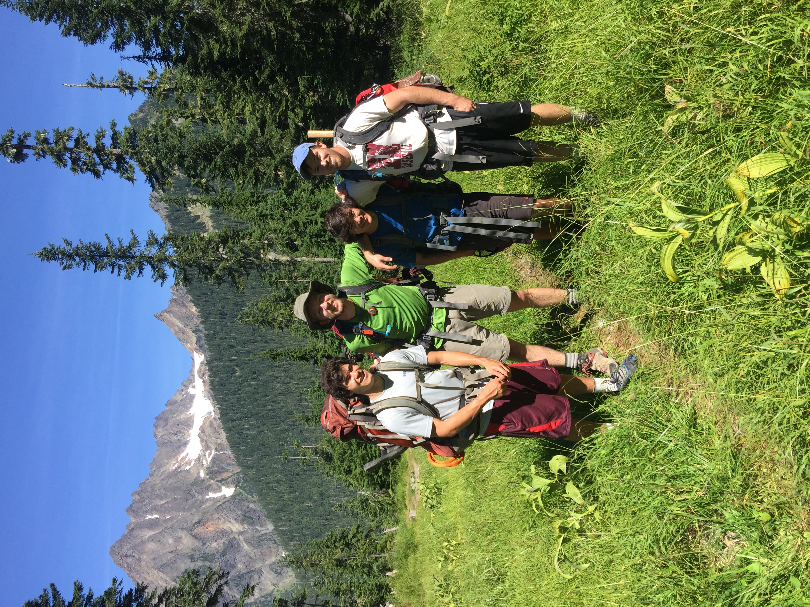

Mountain Hydrology Research
Home
People
Current Team
Alumni
Research
Repeatable Snow Patterns
Snow Information For Wildlife Systems
Forests and Snow
Snow Temperature Readings in the Sierra
Data
Mt Rainier
Yosemite
Snoqualmie
Cedar River
Publications
Peer Reviewed Journals
Conference Proceedings
Conference Presentations
Books And Technical Reports
News
Outreach
Rain on Snow Module
Citizen Science
Join Us! Undergraduates
Join Us! Graduates
Join Us! Post-Doctorals
Home
People
Research
Data
Publications
News
Outreach/Join Us
Outreach
Back to Outreach

Graduate Students
Links And Resources for Perspective Students
Joining Civil and Environmental Engineering
Fellowships for Beginning Graduate Students
Once you are here: Life as a Mountain Hydrology Graduate Student
Recommended Courses for Students Interested in Mountain Hydrology
Frequently Asked Questions about the UW Hydrology and Hydrodynamics Graduate Programs
*How to Win a Graduate Fellowship*
NSF Graduate Research Fellowship Program
National Science and Defense Graduate Fellowship Program
EPA STAR Graduate Fellowship
AAAS Fellowship
NASA (General)
DOE Fellowship
AMS Graduate Fellowship
Ford Foundation Diversity Fellowship
Presidential Management Fellowship in the Forest Service
Valle Scholarship
University of Washington Funding Information Page